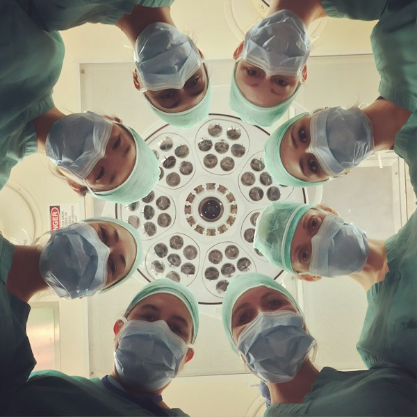
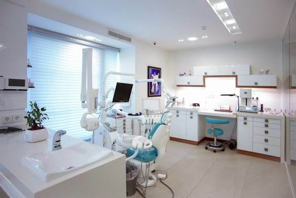
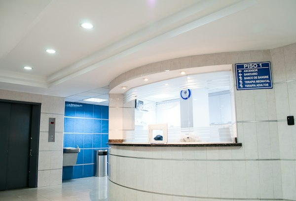

Cuidando el lenguaje para cuidar la vida 🤱🏻✨
Plataforma bilateral diseñada para acompañar a las gestantes migrantes y orientar a los profesionales de salud en Chile, acortando distancias de vocabulario y cultura durante el embarazo, parto y puerperio.
Soy Gestante / Usuaria
Selecciona tu país de origen, busca palabras de tu cultura y conoce cómo se dicen en Chile con explicaciones sencillas, fotos e información del sistema de salud (CESFAM y Maternidad).
Soy Profesional de Salud
Herramienta de atención en box para consultar modismos por país, guías de comunicación empática, láminas ilustrativas para mostrar a la paciente y preguntas de verificación (Teach-Back).
Selecciona tu País de Origen
Adapta los términos, modismos y explicaciones al lenguaje habitual de tu país.
"Provocar el parto"
En Chile el profesional lo llama:
Inducción del parto
Explicación Clara y Sencilla
Recurso Visual de Apoyo

Apoyo gráfico explicativo
Imagen explicativa que muestra el monitoreo materno-fetal y la administración controlada de suero en la sala de preparto.
Facilitado para la comprensión paciente-matronaDiccionario Obstétrico por Categorías
Explora términos frecuentes organizados con sus equivalencias e imágenes.
¿Cómo funciona la Atención de Maternidad en Chile? 🇨🇱
En Chile, la atención del embarazo es gratuita en la red pública de salud para todas las gestantes, independiente de su situación migratoria.

CESFAM (Centro de Salud Familiar)
Es tu centro de salud del barrio. Aquí la Matrona realiza tus controles mensuales, solicita exámenes de sangre, ecografías iniciales y entrega la leche del programa PNAC.
- Controles mensuales de embarazo
- Vacunas obligatorias de gestación

Hospital / Maternidad de Urgencia
Lugar al que acudirás cuando comiences el trabajo de parto o si se presenta una urgencia obstétrica (pérdida de sangre, dolor fuerte o pérdida de líquido).
- Atención del parto e internación
- Urgencias obstétricas 24/7
Consultar según País de Origen de la Gestante
Seleccione la nacionalidad de la usuaria para calibrar el lenguaje y modismos clínicos.
"Tener quebranto"
Significado Clínico Real
Febrícula / Sensación febril ligera
Término Habitual en Red de Salud Chile
Alza térmica leve / Febrícula (< 38°C)
Guía de Comunicación Respetuosa e Intercultural
Validar el malestar expresado por la gestante sin desautorizar su modismo. Utilizar preguntas de precisión clínica empáticas: "¿Desde qué hora siente este quebranto?" indicando el uso correcto del termómetro.
Material Visual de Apoyo para Box de Atención
Lámina de comprobación rápida en consulta
Puede mostrar este recurso gráfico en pantalla o impreso para confirmar la comprensión sin barreras de idioma.
Herramienta de Verificación de Comprensión (Método Teach-Back)
Preguntas sugeridas al profesional para confirmar que la indicación fue comprendida correctamente: